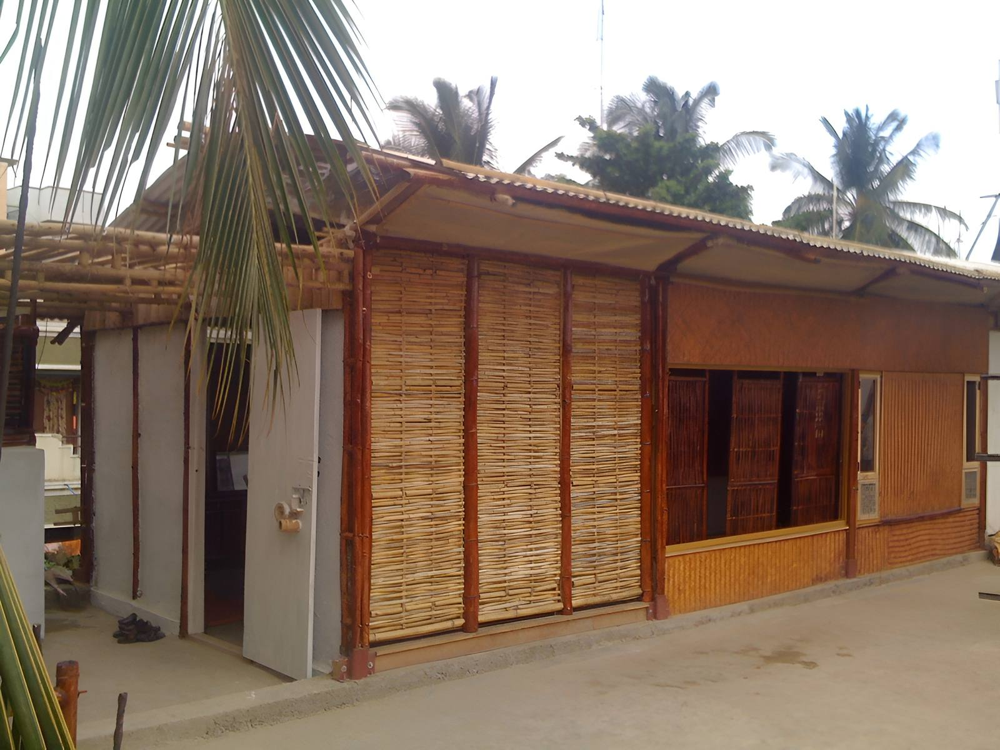
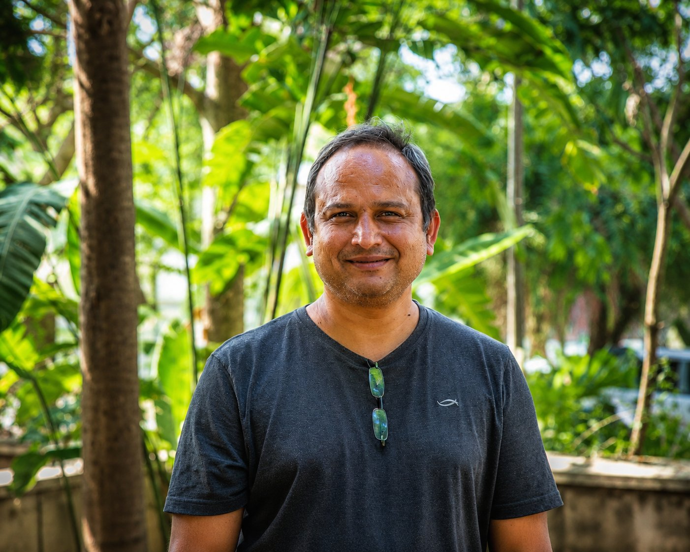
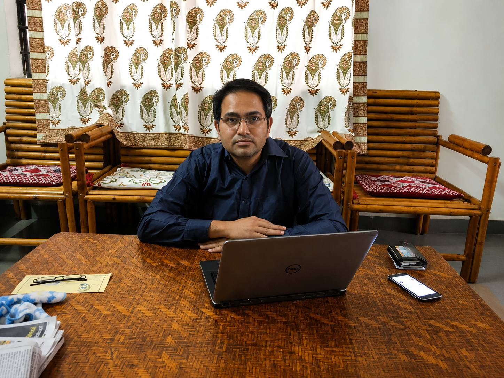
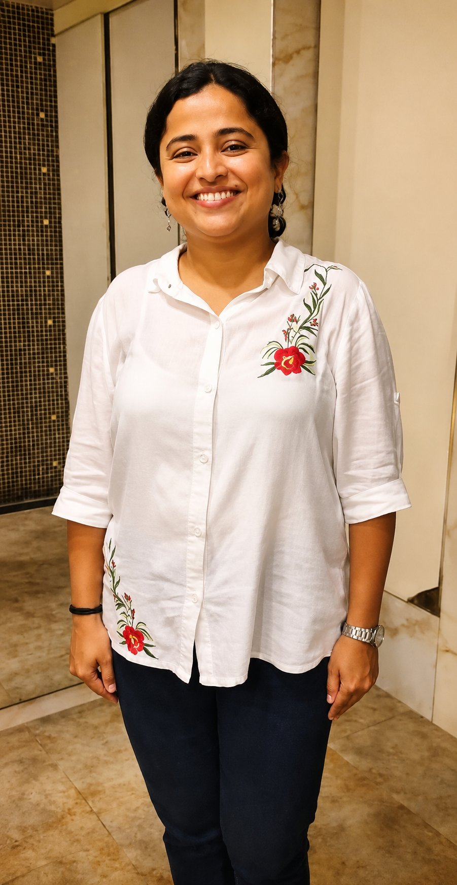
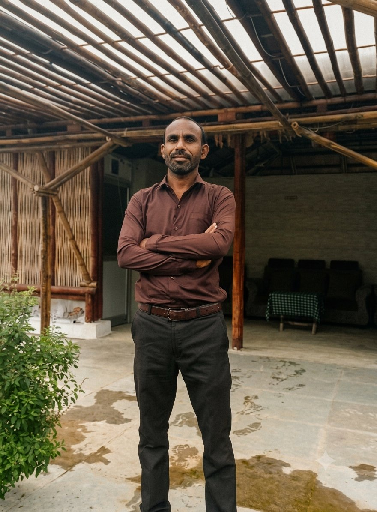
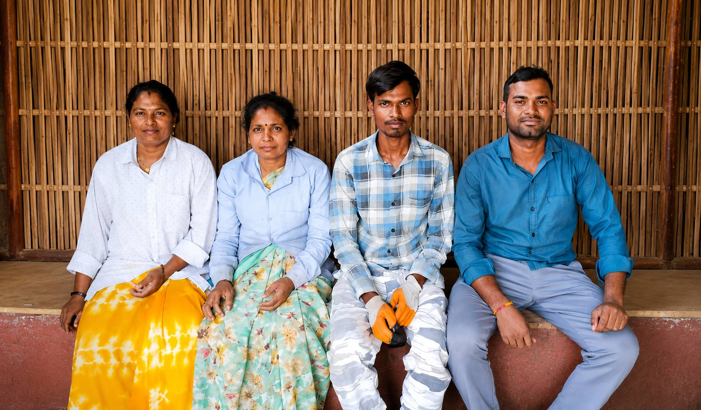
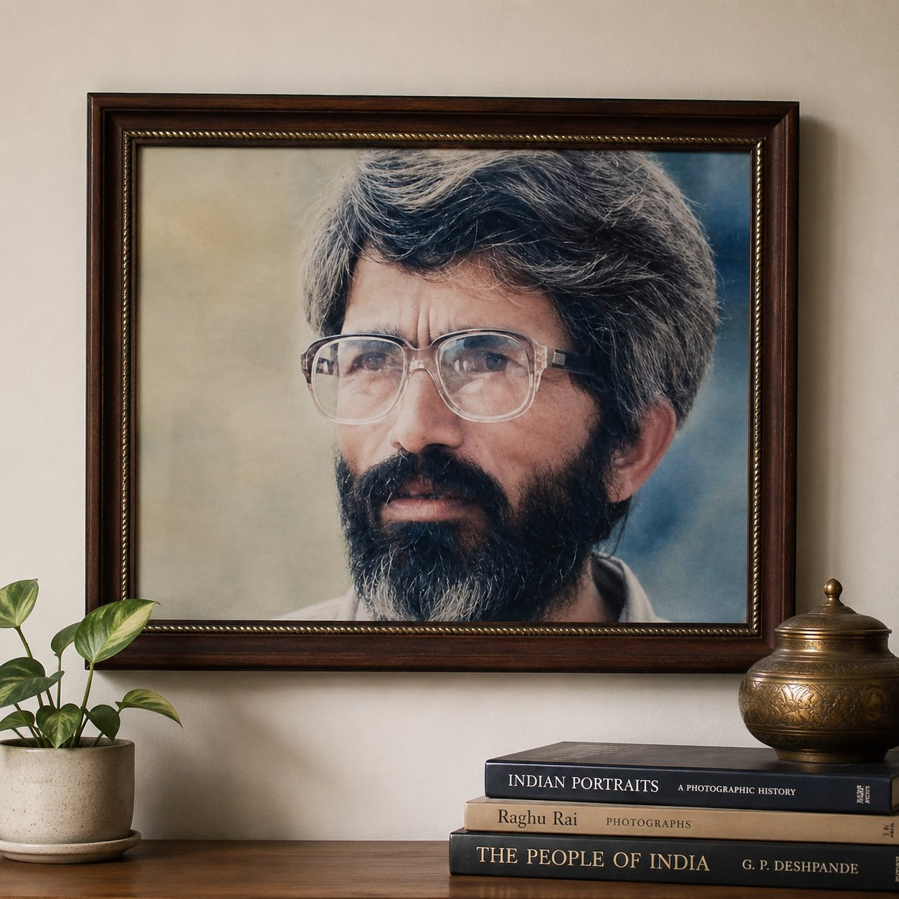

A bamboo design-and-build company rooted in craft, sustainability, and a deep belief in bamboo's potential as the material of the future.

Wonder Grass as an idea began taking shape while I was working with BCIL, a Bangalore-based group focused on green housing solutions in a rapidly growing real estate market. BCIL was not just talking about sustainability — they were actively implementing it at scale, making serious strides in integrating sustainable building technologies.
Experiencing this firsthand led to a fundamental question: can bamboo-based building solutions be brought into the mainstream of the construction industry?
We took this idea to NSRCEL (the IIM Bangalore incubator), where we were selected for incubation. This was followed by participation in the BID-India Business Plan competition, curated by Intellecap, where we secured second place. With the support from NSRCEL and the recognition at BID, Wonder Grass formally began its journey.
In the early years, our Bangalore office functioned as a business development and design hub, while processing and fabrication took place at our workshop in Village Peth, Nagpur. Since 2016, all our operations — design, innovation, sales, and fabrication — have been centralised at the Peth facility.
Over the past two decades, we have had the opportunity to work with a diverse range of clients, including the Guggenheim Museum, Godrej Properties (Nagpur), Sobha Group (Bangalore), Sahyadri School KFI (Pune), BAIF (Pune) and ZIRO Music Festival (A.P.) among others. Each project brought its own set of expectations and challenges, pushing us to learn, adapt, and continuously refine our bamboo systems.
We must acknowledge the support of clients like Sanjay Jayram, NS Raghavan, Ar. Ashok Lal, and many others who, despite the obvious shortfalls in our early work, continued to encourage and believe in us.
Looking back, starting Wonder Grass was truly a leap of faith. It is this very faith that has carried us this far — and today, we find ourselves ready to reach even greater heights.
Our vision is to transform the idea of bamboo structures, from being perceived as 'Jugaad & Temporary' to something which is 'Elegant & Reliable' while the very process of building (with bamboo) is to be creative & joyful.
Build an enterprise to build and deliver 1 million Sq. ft. of bamboo buildings per year.
Pre-fabricated structural components (like columns, beams, trusses) and BIY (Build It Yourself) Kits for everyday use building — made available in off-the-shelf format at one building store in every village, town and city in central India.
We have pioneered an approach to prefabrication and on-site assembly using round bamboo. Wonder Grass is among the few enterprises globally to develop in-house, innovative technology that works with bamboo in its natural tubular form — enabling seamless assembly of building components on site.
At Wonder Grass, every project feeds the next. We continuously refine our systems based on real-world performance. Our workspace functions less like a factory and more like a laboratory — where we test, adapt, and push the limits of bamboo construction. Client briefs are not just requirements — they are opportunities to innovate.
We don't build for the sake of building. Every project is designed to create value across multiple layers — for users: comfort, affordability, and aesthetics; for artisans: dignified, meaningful livelihoods; for the environment: reduced carbon footprint through renewable materials.
At its core, Wonder Grass is about one idea: Building systems that create value for everyone involved — people, craft, and the planet.
Bamboo is not just a material — it's a philosophy. As the world's fastest-growing plant, bamboo represents a radical alternative to conventional timber and steel construction.

Director
Vaibhav is a designer by training with decades of experience in designing and implementing bamboo structures of various scales. He worked with BCIL, Bangalore as senior architect after his post-graduate research in urbanism from Bauhaus, Germany. Today, Vaibhav leads Wonder Grass as CEO and coordinates all back- and front-end operations.

Director
Completed his education in electronics, and went onto work with Er. Rajendra Ranade, PACE Computers, Ahmedabad. His core domain is Data-Servers assembly, installation and maintenance.

Admin & Finance
Completed her MA Economics from University of Pune. Multilingual Spanish and German professional with 10+ years of cross-sector experience spanning international tourism, procurement, online retail, social and education sectors.
Design Lead
An engineer-turned-architect who pursued architecture after discovering his passion for design and the built environment. He graduated in Architecture from KRIVIA, Mumbai, and is currently pursuing a Master's in Environmental Architecture at IDEAS, Nagpur. With over six years of association with Wonder Grass, he also leads Mrida Design Studio, an architecture, design, and landscape practice.

Senior Artisan & Project Coordinator
An ITI graduate of 2010 batch, Yadav joined Wonder Grass as an apprentice and went on to become operations in-charge at the Peth facility. A carpenter by training, he has mastered the bamboo building systems. His 15+ years of experience building bamboo structures — exclusively and of different scales — is almost unparalleled.

Fabrication & On-Site Assembly
Sachin Nikhare has been a key member of Wonder Grass for over a decade, leading installation and execution teams across projects. With deep expertise in both fabrication and on-site assembly, he plays a vital role in project delivery.
Suraj Thakre has been associated with Wonder Grass for over six years, developing his skills through hands-on experience, dedication, and continuous learning.
Female Artisans at Wonder Grass form an integral part of the team. Associated with the organisation for over eight years, they lead prefabrication activities at the Peth workshop — including bamboo treatment, specialised joinery, and component assembly.
Marketing & Sales
[ Brief bio placeholder ]

A man with extraordinary design talent, acute intelligence and a heart full of empathy — fondly remembered by bamboo artisans as Guruji across India, even today, 25 years after his early demise in 1998. One of his friends and colleagues put it eloquently: "Vinoo was a pragmatist of rare type who believed 'There are no ideals, except that we choose to ignore the aspects of the real.'" He was inspired by the works and thoughts of Gandhi–Vinoba and Kumar Appa.
Starting his career as an architect in Mumbai, he soon realised that something wasn't right — the work felt too detached from what was happening in India beyond the city limits. He left his well-established practice and went on a search for what India is truly about, travelling and living in rural India for almost a year.
In a small span of 52 years, he left an indelible mark on the contemporary Indian socio-architectural moment — raising critical questions about what to build, what materials to build with, and whom to build for. He was one of the early proponents who discarded a flourishing practice in upmarket Mumbai to embrace and explore the aesthetics of India, its geo-climatic and cultural specificities.
His lifelong dedication to bamboo as a building material and his work with artisan communities continues to inspire Wonder Grass Initiative in everything it pursues.
We welcome applications from architects, engineers, and professionals aligned with sustainable and system-driven construction.
[email protected]